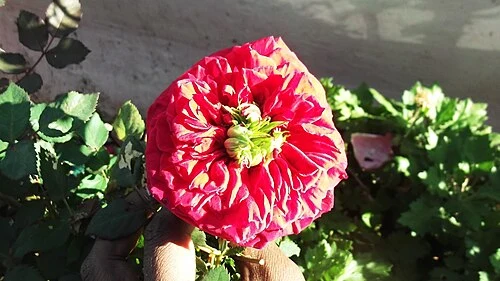

已开放的月季中央又长出花蕾
本已开放的花，中央又冒出一枚花蕾。找到新蕾基部，可以把真正的花贯生与花枝重叠区分开来。

观察特征
摘花前从花心向下看。已经开放的月季中央有时会伸出新花蕾或短花枝，这种现象称为花的贯生。
辨别线索
沿新生部分找到基部，以排除另一枝花刚好搭在上面。如果几片花瓣被绿色叶片状组织替代，还可能同时出现花器叶化。
处理方法
从侧面和正上方各拍一张。如果只有一朵花如此、整株长势正常，花谢后按平常方式剪去残花即可。
后续复查
比较同一枝和其他枝的下一轮花。如果连续多轮出现畸形花，同时新梢也异常，值得进一步鉴定。保留整枝和花心两种照片。
找到新蕾生长的起点
从花下方向上看，再从上方俯看。若两条花柄分别从枝上长出，就是相邻花朵；若新蕾确从原花的花托中央伸出，可标记花枝，观察第二朵能发育到何种程度。
等第一朵花充分展开后再观察花心数。紧密折叠的花瓣会遮住新花梗的起点，在外瓣脱落前拍张侧照，可保留剪残花后便无法看到的连接关系。